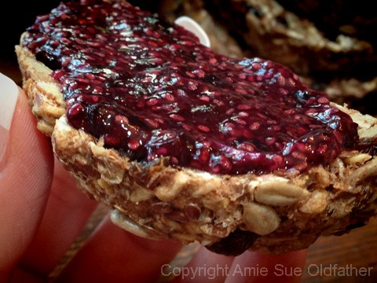
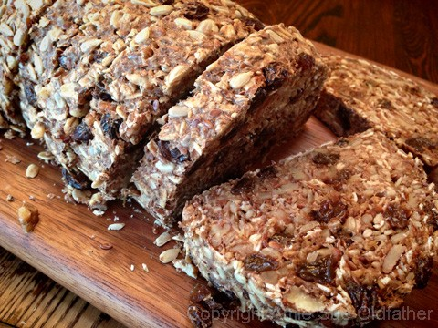
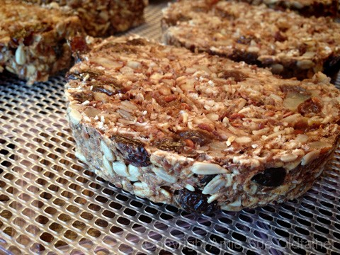
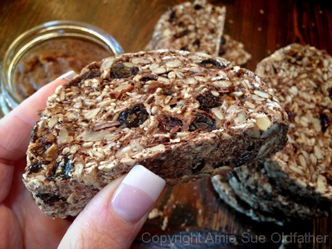
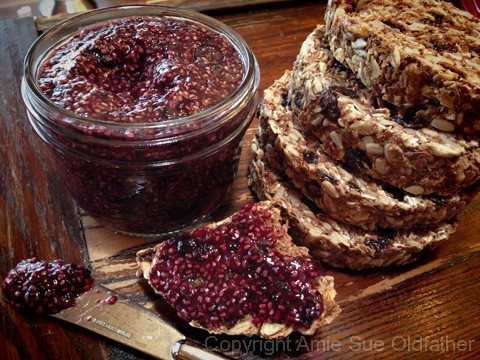
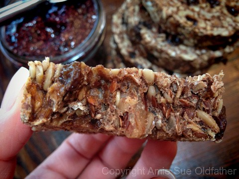

The Seed of Life Bread

~ raw, vegan, nut, gluten-free ~
Making raw loaves of bread is one of my greatest joys in the kitchen. You must understand the power behind those words because I LOVE working in the kitchen, making anything and everything. Perhaps it stems from my all-time love of bread.
I have been gluten-free for about seven years now, and the one gluten-ized foods I miss the most is bread. I don’t care what shape, color, or flavor profile it comes in… I love(d) them.
My Great Grandmother was one who never threw anything away. At a very young age, she taught me how to sew. I think she got tired of having to make all my doll dresses, and trust me; my dolls were fashionistas! Haha Roughly around the age of six, I was sewing doll clothing, blankets and she even taught me how to make purses with zippers in them.
There is a point in me sharing this with you… After I would sew two pieces of material together and would snip the thread tails off, I was instructed to save them in a jar that sat on the corner of the sewing table. Once the jar started to fill up with various colors and lengths of thread, we would take it outside, and piece by piece lay the thread on the driveway.
We would then run into the house and sit in an extra-large lounge chair (that was upholstered with the scratchiest fabric ever made) and wait for the birds. Patience was the key. Soon the birds would swoop down and pick up the threads, one by one. They would fly up into the trees, and this is where they used the threads to help build their nests. What a magical time.
All this to share, that Great Grandmother also saved every scrap and crumb of bread that was either leftover from meals or had gone dry and stale. She kept an ongoing plastic bread bag of these dried out morsels. Once a week, the bag was handed to me, and it was my job to hop on my bike and make my way to the local zoo. I think they had five chickens, a few buffalos, and a maze of prairie dogs. Lol, I am not sure if that classifies as a zoo, but hey, what can I say.

So, once on my bike, the bag dangling from the handlebars, I weaved my way down the roads to the zoo. By the time I got there, most of the dried bread bits were gone. A hole in my bag?! Nope, just me, nibbling away. Lol So there, all that to reinforce that I love bread in all forms. :) I can almost say that I love raw breads more than cooked ones because I love dense and chewy breads. And this bread fits that bill!
In honor of this amazingly nutritious bread, I created a special jam just for the occasion… Blueberry Mint Chia Jam. Enjoy!
Adapted (renamed) and modified slightly from the cooked recipe by My True Roots blog
Ingredients: Makes 1 loaf
Dry Ingredients:
- 1 1/2 cups (145 g) gluten-free rolled oats, soaked
- 1 cup (135 g) raw sunflower seeds, soaked
- ½ cup (65 g) pumpkin seeds or raw pecans, soaked
- 1/2 cup (90 g) flax seeds
- 1 cup raisins
- 2 Tbsp chia seeds
- 4 Tbsp psyllium seed husks or 3 Tbsp psyllium husk powder
- 1 tsp Himalayan pink salt
Wet Ingredients:
- 1 Tbsp maple syrup
- 1 1/2 tsp liquid stevia
- 3 Tbsp melted coconut oil
- 1/2 cup + water (see below)
Preparation:
- Drain the water from the seeds and oats before adding to the other ingredients.
- You will want to rinse the oats until the water runs clear, making sure to hand squeeze the excess water from them.
- In a medium-sized bowl, combine the oats, sunflower seeds, pumpkin seeds, flax seeds, raisins, chia seeds, psyllium, and salt. Toss till mixed.
- Psyllium husks are significant health benefits, but if you choose not to use them, grind the flax seeds into a powder in the spice grinder, this will take the psylliums place in acting as a binder for the bread. If the batter seems to dry, add 2 Tbsp of water at a time.
- If you can’t eat oats, maybe sprouted or cooked quinoa could take its place… I haven’t tried this yet.
- Add the maple syrup, stevia, coconut oil, and 1/2 cup of water. I used my hands to mix this batter to make sure everything got well coated. If the batter seems to dry, you can add more water but try to use the least amount as possible.
- If you are on a sugar-free diet, you can omit the maple syrup and even the stevia. At this point, you can also leave out the raisins and make it a savory bread.
- Place the batter in a bread loaf pan and shape the top into a loaf.
- Let it sit for up to 30 minutes, allowing the binders time to do their job.
- Once that is done, remove the bread from the pan and place the batter on the teflex sheet that comes with the dehydrator.
- Dehydrate at 145 degrees for 1 hour, then reduce to 115 degrees and continue drying for 4-6 hours.
- 12/31/14 Update note – I have made this bread many times over. The last time I made it, I forgot about it in the dehydrator overnight in the whole bread loaf form. At that time, I continued with the remaining instructions, and it turned out amazing.
- Remove and slice into desired thickness. Lay each piece on a mesh sheet that comes with the dehydrator.
- Continue drying for 4-6 hours.
- When dehydrating, you can make this bread as moist as you want or as dry as you wish. Keep in mind that the more moisture that is left in the bread, the shorter the shelf-life.
- If you don’t own a dehydrator and want to bake this recipe in the oven, preheat the oven to 350°F / 175°C. Place the batter in a loaf pan and slide the pan onto the middle rack. Bake for 20 minutes, remove bread from loaf pan, place it upside down directly on the rack and bake for another 30-40 minutes. Bread is done when it sounds hollow when tapped. Let cool completely before slicing.
- Store in an airtight container. It should last 3-5 days. Or you can wrap each piece individually and freeze it for future enjoyment!
The Institute of Culinary Ingredients™
- To learn more about maple syrup by clicking (here).
- Click (here) to learn why I use stevia.
- What is Himalayan pink salt, and does it matter? Click (here) to read more about it.
- Is coconut butter the same as coconut oil? Click (here) to find out.
- Are oats gluten-free? Yes, read more about that (here).
- Are oats raw? Yes, they can be found. Click (here) to learn more.
- Do I need to soak and dehydrate oats? Not required but recommended. Click (here) to see why.
- How does psyllium work in a recipe? Learn more (here).
Culinary Explanations:
- Why do I start the dehydrator at 145 degrees (F)? Click (here) to learn the reason behind this.
- When working with fresh ingredients, it is essential to taste test as you build a recipe. Learn why (here).
- Don’t own a dehydrator? Learn how to use your oven (here). I do, however honestly believe that it is a worthwhile investment. Click (here) to learn what I use.




© AmieSue.com